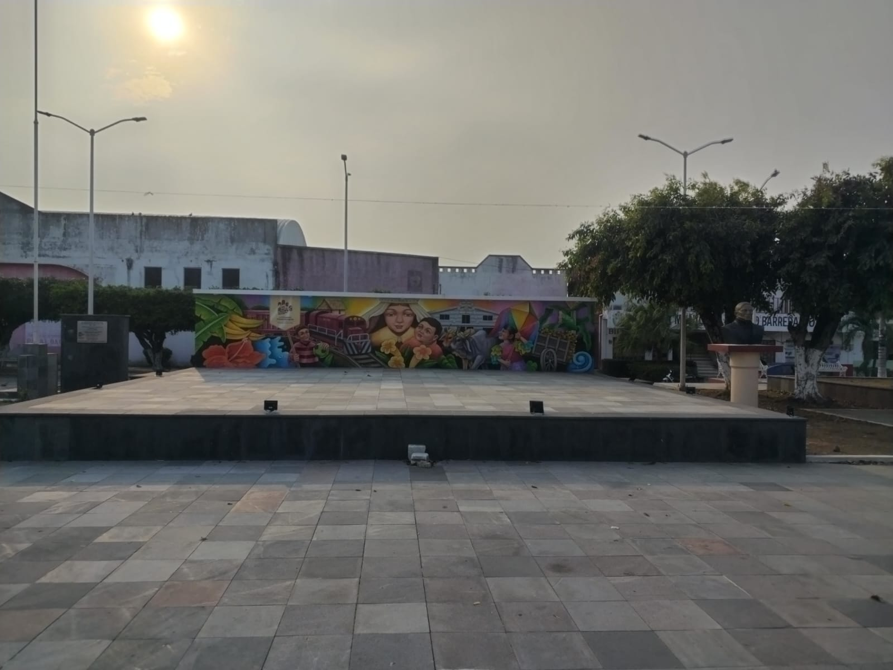

Es un pueblito pintoresco, alrededor de unos 4726 habitantes, en el encontraras una gran variedad de comercio, o al menos los necesarios. para no ir muy lejos, aunque no sea una comunidad muy unida, no hay conflictos ni desastres en el, hay mucha paz y tranquilidad. Se hizo una envestigacion en el cual dice que el 90 porciento de el territorio que hoy es Gabino Barreda era panteon, asi como los alrededores de Gabino Barreda, pertenece al Municipio de Cosamaloapan de Carpio y esta a 23 metros de altura.
